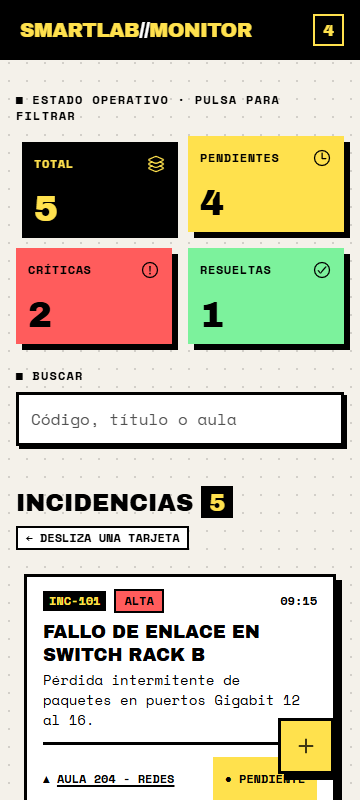
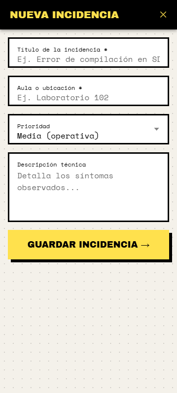
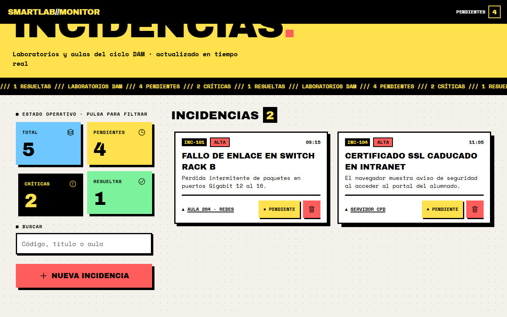

| Despliegue (Vercel) | https://smartlab-home-tw.vercel.app |
| Repositorio | https://github.com/clax-dev/DI-smartlab-home-tw |
| Stack | React 18 · TypeScript · Ionic React 8 · Tailwind CSS 3.4 · Vite 5 |
Crear un proyecto nuevo en React cuya pantalla principal (Home) esté maquetada con clases utilitarias de Tailwind CSS. El Home debe adaptarse a tres tipos de dispositivo (móvil, tablet y escritorio) y publicarse en Vercel, aplicando estilo brutalista, interacciones y un layout basado en vh. Se parte de la guía técnica de la asignatura (SmartLab Incident Manager), que ya plantea Ionic React + Tailwind sobre Vite. A esa base se añade un diseño responsive de tres niveles y se divide el Home en componentes.
main.tsx ─► App.tsx (IonApp + router: "/" → "/home")
└─► pages/Home.tsx ← dueño del estado: lista, búsqueda, filtro, modal, toast
├─ KpiCard props: label, value, icon, tone
├─ IncidentItem props: incident · callbacks: onToggleStatus, onDelete
└─ NewIncidentModal estado local del formulario · callback: onCreate
Flujo unidireccional: los datos bajan a los hijos como props y los eventos suben como callbacks. Solo Home modifica la lista. Las métricas y el listado filtrado se calculan a partir del estado con useMemo, así que no se guardan duplicados.
| Decisión | Motivo | Alternativa descartada |
|---|---|---|
| Ionic React + Tailwind | Es el stack de la guía. Ionic aporta los controles móviles (deslizar, FAB, modal) y Tailwind el layout responsive. | React + Vite sin Ionic: más simple, pero habría que programar a mano los gestos táctiles. |
| Home dividido en 3 componentes | Cada pieza tiene una sola responsabilidad. Cambiar el diseño de la tarjeta solo afecta a IncidentItem. | Un único Home.tsx de 450 líneas, como en la guía. |
| Estado del formulario dentro del modal | El tecleo no vuelve a pintar todo el Home, y el padre solo recibe datos ya validados. | Mantener los 4 useState del formulario en Home. |
| Botones y buscador nativos con Tailwind | El brutalismo exige controlar borde, sombra y foco; en un <button> nativo Tailwind llega a todo. | IonButton/IonSearchbar: su aspecto vive en el Shadow DOM y solo se cambia con variables. |
| Personalización del Shadow DOM mediante variables CSS | Las clases de Tailwind no penetran en el Shadow DOM de Ionic. | Usar className="--padding-start:16px" como en la guía: no es una clase válida y el navegador lo ignora. |
Las clases de Tailwind sin prefijo definen el diseño móvil. Los prefijos md: (≥ 768 px) y lg: (≥ 1024 px) añaden cambios para pantallas más anchas. La pegatina «Vista Mobile / Tablet / Desktop» del hero muestra qué layout está activo.
| Vista | Ancho | Cambios de layout | Clases clave |
|---|---|---|---|
| Mobile | < 768 px | 1 columna · KPIs 2×2 · botón flotante · acciones con gesto de deslizar · modal a pantalla completa | grid-cols-2, IonFab |
| Tablet | 768–1023 px | KPIs en una fila de 4 · tarjetas en 2 columnas · título del hero más grande · modal centrado de 640 px | md:grid-cols-4, md:grid-cols-2, sm:text-6xl |
| Desktop | ≥ 1024 px | Panel lateral fijo de 360 px + rejilla de tarjetas · sin FAB (botón en el panel) · botón de borrar visible, porque con ratón no hay gesto de deslizar | lg:grid-cols-[360px_1fr], lg:sticky, lg:hidden |
scrollWidth = clientWidth), por lo que no hay scroll horizontal. Las áreas táctiles miden al menos 44 px y los botones de solo icono llevan aria-label.| Requisito | Qué se ha hecho | Clases / código clave |
|---|---|---|
| Brutalismo | Bordes negros de 3–4 px, sombras duras sin desenfoque, colores planos saturados, títulos gigantes en mayúsculas (Archivo Black), sin esquinas redondeadas, fondo de puntos y trama rayada en las resueltas. | border-[3px] border-brut-ink, shadow-brut (6px 6px 0 #000), paleta brut-* y font-display en tailwind.config.js |
| Interacciones | Botón "físico" que se levanta con el ratón y se hunde al pulsar · KPIs clicables que filtran el listado (el activo se ve invertido y hundido) · tarjetas que se levantan · animación al crear · marquesina con contadores en vivo que se pausa al pasar el ratón · buscador resaltado al enfocar · gesto de deslizar en móvil. | .brut-press con @apply hover:-translate-* active:translate-x-[6px] active:shadow-none, aria-pressed, animate-pop, animate-marquee |
| Layout con vh | Hero de altura relativa a la ventana · KPIs con alto mínimo · panel lateral de escritorio que nunca supera la ventana · listado con alto mínimo para que no "salte" al filtrar · modal limitado al 85 % de la ventana. | min-h-[38vh] md:min-h-[32vh] lg:min-h-[34vh], min-h-[12vh], lg:max-h-[calc(100vh-7rem)], lg:min-h-[60vh], --height: min(500px, 85vh) |
Accesibilidad de las interacciones: hoverOnlyWhenSupported evita el hover "pegado" en táctiles, las animaciones se desactivan con motion-reduce: y el foco de teclado se marca con un contorno de 4 px.
vercel.json declara el framework Vite, el comando npm run build y la carpeta dist./(.*) → /index.html hace que recargar /home no dé un 404. La ruta la resuelve React en el navegador (es una SPA) y no existe como fichero en el servidor.git push a main vuelve a desplegar la app automáticamente.npm install npm run dev # http://localhost:5173 npm run build # build de producción en dist/ (lo mismo que ejecuta Vercel)



